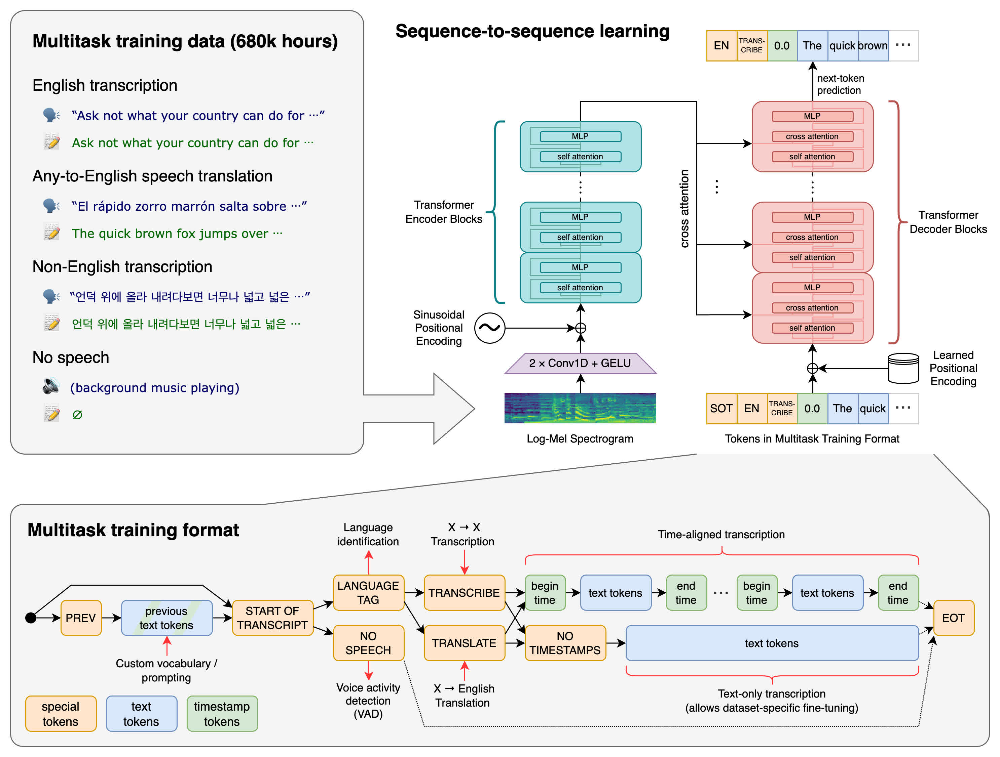

8.2 Automatic Speech Recognition
Robust Speech Recognition via Large-Scale Weak Supervision
Created Date: 2025-05-31
We’ve trained and are open-sourcing a neural net called Whisper that approaches human level robustness and accuracy on English speech recognition.
Louis-François Bouchard's OpenAI's Whisper Model Explained is the picture for this page.
Whisper is an automatic speech recognition (ASR) system trained on 680,000 hours of multilingual and multitask supervised data collected from the web. We show that the use of such a large and diverse dataset leads to improved robustness to accents, background noise and technical language. Moreover, it enables transcription in multiple languages, as well as translation from those languages into English. We are open-sourcing models and inference code to serve as a foundation for building useful applications and for further research on robust speech processing.

Figure 1 - Whisper Architecture
The Whisper architecture is a simple end-to-end approach, implemented as an encoder-decoder Transformer. Input audio is split into 30-second chunks, converted into a log-Mel spectrogram, and then passed into an encoder. A decoder is trained to predict the corresponding text caption, intermixed with special tokens that direct the single model to perform tasks such as language identification, phrase-level timestamps, multilingual speech transcription, and to-English speech translation.
8.2.1 Quick Start
pip install -U openai-whisper
import whisper
model = whisper.load_model("small")
result = model.transcribe('res/audio/voice_sample.mp3')
print(result['text'])Being able to communicate positions within a room is critical to our ability to focus light in a certain area or place objects in their proper location on stage, but it goes even deeper than that. This proficiency provides the basic vocabulary in a common language that is spoken by production and staging professionals around the world.
8.3.2 Source Code
The local copy of the inference stack lives in 08_audio/2_whisper. pytest runs the tests next to it. Each file below is one piece of the path from a waveform to text.
8.3.2.1 audio.py
audio.py turns a file into the log-Mel spectrogram the encoder expects. Audio is loaded as mono at 16 kHz. A 30-second chunk is 480,000 samples. The spectrogram uses an FFT of 400, a hop of 160 (10 ms), and 80 or 128 Mel bins. pad_or_trim forces every chunk to that length, and log_mel_spectrogram is the tensor the model actually sees. The constants at the top of the file are the contract: change the hop and the encoder's positional grid no longer lines up.
8.3.2.2 decoding.py
decoding.py runs the decoder autoregressively. detect_language reads the distribution over language tokens at the first step, before any transcript tokens are chosen. The rest of the file holds the decoding options — temperature, beam size, and the prompts that request transcription versus translation into English. Sampling with a higher temperature is the fallback when a greedy decode looks stuck.
8.3.2.3 model.py
model.py is the encoder-decoder drawn above. ModelDimensions records width, heads, and depth for both stacks. The audio encoder is convolutions over the Mel spectrogram, then residual attention blocks. The text decoder is a transformer decoder with causal attention. Whisper.forward ties them: encoder states are the keys and values the decoder cross-attends to. When scaled dot-product attention is available the blocks use it; disable_sdpa forces the explicit matmul path.
8.3.2.4 timing.py
timing.py aligns tokens with the audio. A median filter smooths the cross-attention weights between decoder steps and encoder frames, and a dynamic-time-warping path through those weights assigns each token a start time. That is where phrase-level timestamps come from. The filter width is the only knob; a wider filter is smoother and less willing to mark a short word.
8.3.2.5 tokenizer.py
tokenizer.py wraps a byte-level BPE vocabulary plus the special tokens Whisper inserts: language, task (transcribe or translate), and timestamp tokens. get_tokenizer picks the multilingual or English-only encoding. The model never sees raw characters. Everything in the decoder, including the task switch, is an id from this file.
8.3.2.6 transcribe.py
transcribe.py is the function the quick start calls. It loads audio, slices it into 30-second windows, runs the model, and stitches the text. Word timestamps and the verbose segment list are optional outputs of the same loop. The one-liner in section 8.2.1 is this function with the defaults.
8.3.2.7 triton_ops.py
triton_ops.py replaces two hot kernels with Triton implementations on CUDA: a dynamic-time-warping step used by the timestamp alignment, and the median filter from timing.py. On CPU, or when Triton is missing, the pure PyTorch versions in timing.py still run. The numerical job does not change.
8.3.2.8 utils.py
utils.py is the small shared helpers: exact_div for the sample-rate arithmetic in audio.py, and argument parsers (str2bool, optional_int, optional_float) for the command-line entry. exact_div raises if the division does not come out even, which is how a bad hop length fails immediately instead of as a shape error inside the encoder.